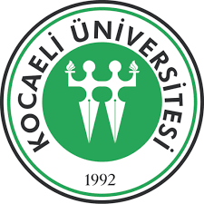
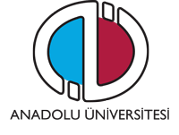

Eğitim Hayatı

2011-2015 İstanbul Üniversitesi-Lisans/Sosyal Hizmet Bölümü

2018-2021 Kocaeli Üniversitesi-Yüksek Lisans/Kadın Çalışmaları Bölümü
2020-.. İstanbul Üniversitesi-Lisans/Çocuk Gelişimi Bölümü

2017-2020 Anadolu Üniversitesi-Ön Lisans/Yaşlı Bakım Bölümü
2022-.. Anadolu Üniversitesi-Ön Lisans/Bilgisayar Programcılığı Bölümü